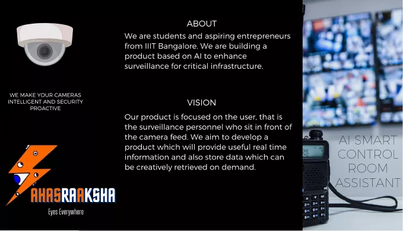

Sahasraaksha
AI in CCTV Surveillance
 The Team
The Team

Hence, we propose an advanced AI-based solution making use of state-of-the-art deep learning approaches to provide various features that help in better understanding and managing the information one receives from the surveillance feeds, thus, leading to a qualitatively enhancement in security Sahasraaksha is the way through which we are linking the three steps of CCTV based security (physical security, surveillance, and video backups) and adding a new, and what we assume to be the future crucial part of surveillance, analytics. Sahasraaksha was started as a team of four IIIT-B students, Sriram, Parithimalan, Nachiappan and Vikram Adithya.
Sahasraaksha initially started as a personal side project based on the curiosity felt on just how much more effective can existing security be made by introducing AI into it
The Team
Contact us:
Sahasraaksha1000@gmail.com Connect with us:
Even though surveillance cameras are now ubiquitous they are
rarely made use of. There has to always be at least one person
surveilling the live feeds 24/7 to stop any untoward incident
from happening.
Sahasraaksha1000@gmail.com Connect with us:
Hence, we propose an advanced AI-based solution making use of state-of-the-art deep learning approaches to provide various features that help in better understanding and managing the information one receives from the surveillance feeds, thus, leading to a qualitatively enhancement in security Sahasraaksha is the way through which we are linking the three steps of CCTV based security (physical security, surveillance, and video backups) and adding a new, and what we assume to be the future crucial part of surveillance, analytics. Sahasraaksha was started as a team of four IIIT-B students, Sriram, Parithimalan, Nachiappan and Vikram Adithya.
Sahasraaksha initially started as a personal side project based on the curiosity felt on just how much more effective can existing security be made by introducing AI into it